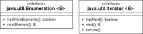

13.5 Mit einem Iterator durch die Daten wandern
Wenn wir mit einer ArrayList oder LinkedList arbeiten, so haben wir zumindest eine gemeinsame Schnittstelle List, um an die Daten zu kommen. Doch was vereinigt eine Menge (Set) und eine Liste, sodass sich die Elemente der Sammlungen mit gleichem Programmcode erfragen lassen? Listen geben als Sequenz den Elementen zwar Positionen, aber in einer Menge hat kein Element eine Position. Hier bieten sich Iteratoren beziehungsweise Enumeratoren an, die unabhängig von der Datenstruktur alle Elemente auslesen – wir sagen dann, dass sie »über die Datenstruktur iterieren«. Und nicht nur eine Datenstruktur kann Daten liefern; eine Dateioperation könnte genauso gut Datengeber für alle Zeilen sein.
In Java gibt es für Iteratoren zum einen die Schnittstelle java.util.Iterator und zum anderen den älteren java.util.Enumeration. Der Enumerator ist nicht mehr aktuell, daher konzentrieren wir uns zunächst auf den Iterator.
Abbildung 13.5: Iterator und Enumeration
13.5.1 Die Schnittstelle Iterator
Ein Iterator ist ein Datengeber, der über eine Methode verfügen muss, um das nächste Element zu liefern. Dann muss es eine zweite Methode geben, die Auskunft darüber gibt, ob der Datengeber noch weitere Elemente zur Verfügung stellt. Zwei Operationen der Schnittstelle Iterator sind daher:
| Hast dub mehr? | Gib mir das Nächste! | |
| Iterator | hasNext() | next() |
Die Methode hasNext() ermittelt, ob es überhaupt ein nächstes Element gibt, und wenn ja, ob next() das nächste Element erfragen darf. Bei jedem Aufruf von next() erhalten wir ein weiteres Element der Datenstruktur. So kann der Iterator einen Datengeber (in der Regel eine Datenstruktur) Element für Element ablaufen. Übergehen wir ein false von hasNext() und fragen trotzdem mit next() nach dem nächsten Element, bestraft uns eine NoSuchElementException.
Prinzipiell könnte die Methode, die das nächste Element liefert, auch per Definition null zurückgeben und so anzeigen, dass es keine weiteren Elemente mehr gibt. Allerdings kann null dann kein gültiger Iterator-Wert sein, und das wäre ungünstig.
interface java.util.Iterator<E> |
- boolean hasNext()
Liefert true, falls die Iteration weitere Elemente bietet. - E next()
Liefert das nächste Element in der Aufzählung oder NoSuchElementException, wenn keine weiteren Elemente mehr vorhanden sind. - void remove()
Die Schnittstelle Iterator erweitert selbst keine weitere Schnittstelle.[194](Konkrete Enumeratoren (und Iteratoren) können nicht automatisch serialisiert werden; die realisierenden Klassen müssen hierzu die Schnittstelle Serializable implementieren.) Die Deklaration ist generisch, da das, was der Iterator liefert, immer von einem bekannten Typ ist.
| Beispiel |
|
Die Aufzählung erfolgt meistens über einen Zweizeiler. Da jede Collection eine Methode iterator() besitzt, lassen sich alle Elemente wie folgt auf dem Bildschirmausgeben: Collection<String> set = new TreeSet<String>(); |
Beim Iterator geht es immer nur vorwärts
Im Gegensatz zum Index eines Felds können wir beim Iterator ein Objekt nicht noch einmal auslesen (next() geht automatisch zum nächsten Element), nicht vorspringen beziehungsweise hin und her springen. Ein Iterator gleicht anschaulich einem Datenstrom; wollten wir ein Element zweimal besuchen, zum Beispiel eine Datenstruktur von rechts nach links noch einmal durchwandern, dann müssen wir wieder ein neues Iterator-Objekt erzeugen oder uns die Elemente zwischendurch merken. Nur bei Listen und sortierten Datenstrukturen ist die Reihenfolge der Elemente vorhersehbar.
| Hinweis |
|
In Java steht der Iterator nicht auf einem Element, sondern zwischen Elementen. |
13.5.2 Der Iterator kann (eventuell auch) löschen
Die Schnittstelle Iterator bietet prinzipiell die Möglichkeit, das zuletzt aufgezählte Element aus dem zugrunde liegenden Container mit remove() zu entfernen. Vor dem Aufruf muss also next() das zu löschende Element als Ergebnis geliefert haben. Eine Enumeration kann die aufgezählte Datenstruktur grundsätzlich nicht verändern.
| Beispiel |
|
Ein LinkedHashSet ist eine auf dem HashSet basierende Datenstruktur, die sich aber zusätzlich die Einfügereihenfolge merkt. Ein Programm soll die ältesten Einträge löschen und nur noch die neusten zwei Elemente behalten: LinkedHashSet<Integer> set = new LinkedHashSet<Integer>(); |
interface java.util.Iterator<E> |
- boolean hasNext()
- E next()
- void remove()
Entfernt das Element, das der Iterator zuletzt bei next() geliefert hat. Kann ein Iterator keine Elemente löschen, so löst er eine UnsupportedOperationException aus.
In der Dokumentation ist die Methode remove() als optional gekennzeichnet. Das heißt, dass ein konkreter Iterator kein remove() können muss – auch eine UnsupportedOperationException ist möglich. Das ist etwa dann der Fall, wenn ein Iterator von einer unveränderbaren Datenstruktur kommt.
| Hinweis |
|
Warum es die Methode remove() im Iterator gibt, ist eine interessante Frage. Die Erklärung dafür: Der Iterator kennt die Stelle, an der sich die Daten befinden (eine Art Cursor). Darum können die Daten dort auch effizient und direkt gelöscht werden. Das erklärt jedoch nicht unbedingt, warum es keine Einfüge-Methode gibt. Ein allgemeiner Grund mag sein, dass bei vielen Container-Typen das Einfügen an einer bestimmten Stelle keinen Sinn ergibt, etwa bei einem sortierten NavigableSet oder NavigableMap. Dort ist die Einfügeposition durch die Sortierung vorgegeben oder belanglos (beziehungsweise bei HashSet durch die interne Realisierung bestimmt), also kein Fall für einen Iterator. Dazu wirft das Einfügen weitere Fragen auf: vor oder nach dem zuletzt per next() gelieferten Element? Soll das neue Element mit aufgezählt werden oder nicht? Soll es auch dann nicht aufgezählt werden, wenn es in der Sortierung erst später an die Reihe käme? Eine Löschen-Methode ist problemloser und universell anwendbar. |
Ihr Kommentar
Wie hat Ihnen das <openbook> gefallen? Wir freuen uns immer über Ihre freundlichen und kritischen Rückmeldungen.
 Jetzt bestellen
Jetzt bestellen


{kind=link}